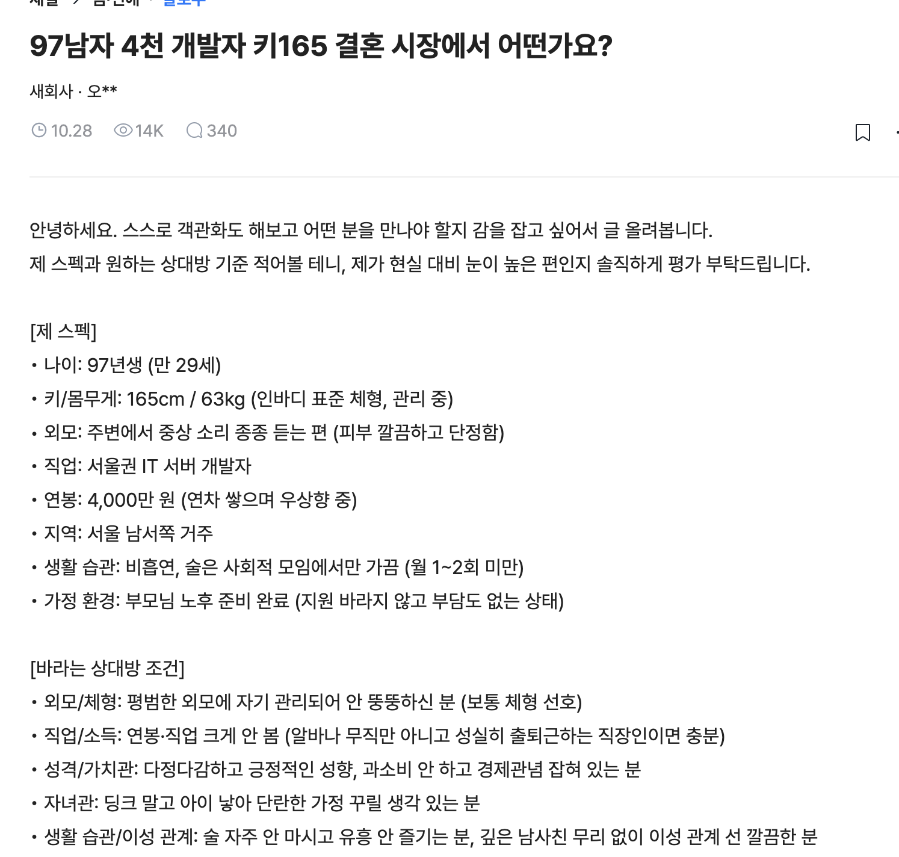
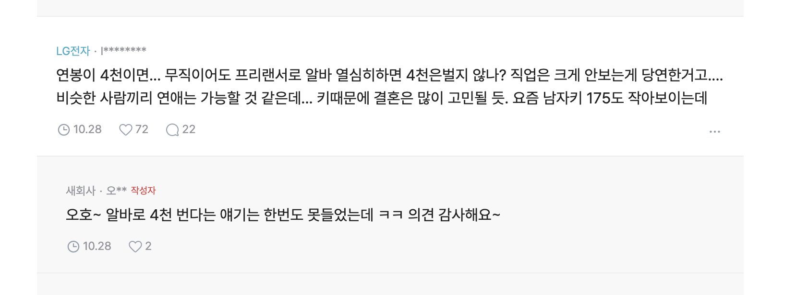

키는 좀 많이 아쉽다 수준이지만
30에 연봉 4천이고 부모님 노후 준비도 되어 있으면 난 괜찮다고 생각하는데
커뮤 현실인지 진짜 현실인지
30에 연봉 4천이면 다 못번다 이러고 있네


키는 좀 많이 아쉽다 수준이지만
30에 연봉 4천이고 부모님 노후 준비도 되어 있으면 난 괜찮다고 생각하는데
커뮤 현실인지 진짜 현실인지
30에 연봉 4천이면 다 못번다 이러고 있네
현실적으로 악성매물 맞음
조쏘에 165에 외모 평범에
연봉 4천으로 서울 거주면 절대 가점요소 아님
리센느대표는 회사돈 1000만원에 30후반에성공했고
테슬라대표도 로켓 4번이나 말아먹고 지옥에서올라왔다
지금가진돈보다 지금무얼하느냐가 중요함
남자 165면 그냥 암컷 타락하는게 더 낫지 싶은데?
블라인드는 기본적으로 허세에 찌든 새끼들이 대다수라 ㅋㅋ
안녕하세요 대리 최저시급 입니다 세전226인가 찍히는듯
30에 4천은 둘째치고 165면 얼굴이 ㅈㄴ 아이돌급 아닌이상 지금 현재 만나고 있는분 있는게 아니면 뭐 누구든 만나서 결혼할수 있을까 걱정부터 해야하지 않나 ...?
남잔데 키가165면 과감히 포기해야할듯
저기서 남자는 본인 퐁퐁해줄 수 있어야 인간취급해줌
Sns 랑 커뮤는 좀 흘러들여야 될듯 쿠쿠전자 저새끼는 연봉 4천도 안될 듯 하다 ㅋㅋㅋ
나랑 비슷한데 저런거보면 한없이 꺾임
나이 키 연봉 다 비슷한데 댓글들 보면 아 그런가? 진짠가? 이러면서
나도 아직 결혼 못했고 하고싶어서 한일결정사 가입했는데 (일본 살다와서 일본어 잘함) 거기서도 매칭이 안됨 ㅠㅠ
한일 결정사 썰이나 좀 풀어주라
매칭이 안된다니까 뭔 썰을 풀어.... 풀 썰이 없어...
170에 부모님 노후 준비 안 됨 ㅠㅠ
나랑 비슷하네
난 28살 165 좃소 4000인데 내년 2월에 결혼함
와이프가 특이취향임
댓글 다는 애들이 다 대기업이라 그런거지 뭐 대기업이랑 중소기업 연봉차가 갈수록 심해지고 있어
하이마트가 하는말 봐라
30에 연봉 4000이고 부모님 노후 준비돼있는건 그냥 현실적인 20후~30초 평균 정도지.. 근데 키가 165잖아.. 뇌 빼고 평균도르만 생각해보면 저분이랑 동일 스펙에 키가 10센치쯤은 큰 남자들이 득실거린다는 거임
4천이 낮은편이구나
전직장 다닐때 연봉인데....
벌이보다 키가.. ㅠㅠ